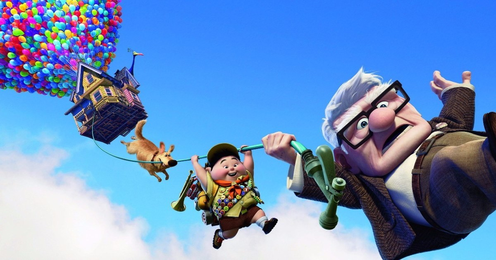
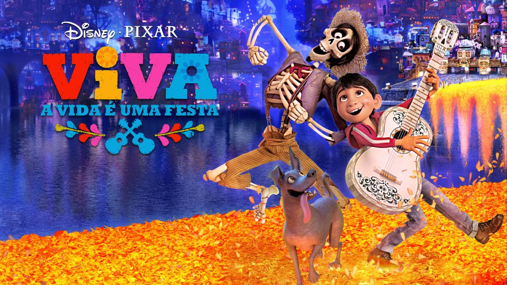

Filems

Toy Story 3
Nenhum dos filmes da Pixar soube equalizar tão bem temas pesados como perda, rejeição, inadequação e morte como Toy Story 3. Na época, este era o último capítulo de uma trilogia, e por isso, encerrava o ciclo de Woody e seus amigos como brinquedos do garoto Andy, que inevitavelmente cresceu e não ligava mais para seus antigos amigos. Este é, ao mesmo tempo, o filme mais dark e o mais sentimental do estúdio.
Up - Altas Aventuras
A sequência de abertura de Up – Altas Aventuras é uma das mais belas feitas pelo estúdio em toda a sua história. Impossível não se emocionar com a história de Carl e sua esposa Ellie. O tom agridoce desse desenho é cativante e leva à luz personagens normalmente ignorados nos cinemas: os idosos. A história dá uma caída quando opta pela aventura pura e simples, mas o velhinho Carl é uma personagem apaixonante demais para que isso afete o todo. Sua casa voando presa a milhares de balões de gás é uma imagem que se tornou um ícone da Pixar.
Viva: A Vida É Uma Festa
Por incrível que pareça, a morte é um assunto muito discutido nas animações da Pixar. E não há um local mais adequado para ambientar uma história que trata desse assunto do que o México, um país que tem uma relação íntima com a morte e suas simbologias. É usando a tradição da festa do Día de los Muertos que o estúdio conta essa tocante história sobre perda e lembrança. Além de uma boa carregada no drama, na tradição das novelas mexicanas, a animação traz alguns dos melhores números musicais do estúdio, tendo uma representatividade de peso, com a maioria dos seus atores sendo mexicanos .

Wall-e
Quando uma história é boa e sólida, ela nem precisa ter palavras para se expressar. E é exatamente isso que acontece em WALL-E, que em boa parte de sua 1 hora e 38 minutos é praticamente um filme mudo. Além do filme ter uma crítica maravilhosa, sobre o meio ambiente, no filme o simpático robozinho lixeiro que dá nome à animação passa qualquer emoção usando apenas seus olhos, e isso é incrível. A primeira metade do filme é um dos mais belos materiais já realizados pela Pixar, com um lirismo tão comovente que emociona até o mais durão dos durões. Perfeição.